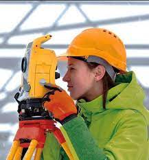

Digital Technologies in Civil Engineering
In recent years, digital technologies have transformed civil engineering by improving how infrastructure is designed, built, and maintained. These innovations make projects more efficient, accurate, sustainable, and cost-effective — from planning and modeling to monitoring and repair.
ü߆ Definition
Digital technologies in civil engineering include software, sensors, automation, and data tools used to enhance the design, construction, and management of buildings and infrastructure.
üíª Key Digital Technologies
- Building Information Modeling (BIM): 3D model-based design that enables better planning, clash detection, and lifecycle management.
- Geographic Information Systems (GIS): Analyzes spatial data for urban planning, mapping, and water management.
- Drones (UAVs): Used for site surveys, inspection, and visual progress tracking — quickly and safely.
- 3D Printing: Builds components or entire structures from concrete, reducing labor, time, and waste.
- Virtual & Augmented Reality (VR/AR): Offers immersive design previews and digital overlays for construction assistance.
- Internet of Things (IoT): Embeds sensors in infrastructure to monitor stress, temperature, and performance in real time.
- Artificial Intelligence (AI) & Machine Learning (ML): Analyzes data for predictive maintenance, risk assessment, and automation.
- Robotics & Automation: Performs tasks like bricklaying, welding, and concrete pouring with high precision and safety.
üéØ Benefits
- Faster and more accurate project planning
- Reduced human error and material waste
- Improved safety through automation and monitoring
- Cost savings through optimized resource use
- Enhanced collaboration via cloud tools and real-time data
üèóÔ∏è Applications
- Smart cities and sustainable urban development
- Infrastructure asset and lifecycle management
- Remote construction monitoring
- Disaster prediction and risk reduction
✅ Conclusion
Digital technologies are redefining civil engineering, enabling the development of smarter, faster, and more resilient infrastructure. Embracing tools like BIM, IoT, AI, and drones is essential for building the sustainable, connected cities of tomorrow.